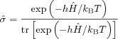

Thermal equilibrium density matrix.
sigma = sigeq(Ham,Temp) sigma = sigeq(Ham,Temp,'pol')
This function calculates the thermal equilibrium density matrix for
the system described by the Hamiltonian Ham (in units of MHz) for
the temperature Temp (in units of K).
If 'pol' is given as a third argument, only the polarisation
part of the thermal equilibrium density matrix is returned.
The returned density matrix sigma is in the same basis as
Ham.
This is a straightforward implementation of
